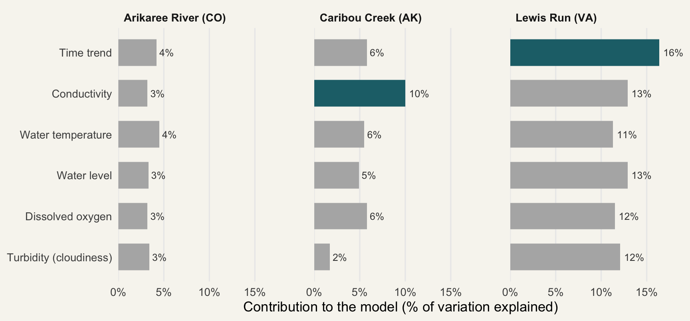

| Stream | Climate | Surrounding land | Catchment size (km²) | Typical nitrate (µM) |
|---|---|---|---|---|
| Arikaree River, Colorado | Semi-arid | Grassland and farming | 2,875 | 5.5 |
| Caribou Creek, Alaska | Subarctic | Undisturbed forest (taiga) | 106 | 28.4 |
| Lewis Run, Virginia | Temperate | Farmland, near urban areas | 11.9 | 192 |
TipKey takeaways
- Everyday water-quality readings (temperature, conductivity, cloudiness, oxygen and water level) explained around 75–85% of the ups and downs in nitrate.
- Adding nitrate’s own recent history pushed that to 99%, but that extra accuracy needs a nitrate sensor in the water.
- The same five readings were useful in all three streams, but which one mattered most was different in every stream.
Why nitrate is worth watching
A stream can look perfectly clear and still be carrying too much nitrate. Nitrate is a form of nitrogen that plants need to grow, and in small amounts it is harmless. But when extra nitrate washes in from fertilised farmland, sewage or city streets, it can feed large blooms of algae. When those algae die and break down, they use up the oxygen in the water, and fish and insects can suffocate.
That makes nitrate one of the most useful things to track in a stream, ideally hour by hour, because levels can change quickly after rain. The problem is cost. Sensors that measure nitrate directly are expensive, so very few streams have one. Sensors that measure simpler things, such as water temperature, how cloudy the water is, and how much oxygen it holds, are far cheaper and far more common.
That raises three questions this post sets out to answer:
- Can those cheaper, everyday readings tell us how much nitrate is in a stream?
- Does that still work in streams that are very different from each other?
- Which of the everyday readings matter most?
Where the evidence comes from
These questions were tested by an international team of statisticians and freshwater scientists (Kermorvant et al. 2023). They used free, publicly available sensor data from the US National Ecological Observatory Network (National Ecological Observatory Network (NEON) 2021), a government-funded program that monitors rivers and streams across the United States.
Rather than testing one stream, they deliberately chose three that could hardly be more different (Table 1): a dry-country river running through farmland in Colorado, a near-untouched creek in subarctic Alaska, and a small creek near towns and farms in Virginia. Each had around two years of near-continuous readings.
The last column is the one to notice: Lewis Run typically carries about 35 times as much nitrate as the Arikaree River. If a single approach works across streams this different, that is a good sign it could work elsewhere.
How the researchers tested it
For each stream, the researchers built a statistical model that tried to predict nitrate using five everyday readings:
- Water temperature
- Conductivity: how easily the water carries electricity, which rises when more salts and minerals are dissolved in it
- Turbidity: how cloudy the water is
- Dissolved oxygen: how much oxygen the water holds
- Water level
They then checked how much of the real rise and fall in nitrate the model could reproduce, and how much each reading contributed.
NoteFor the curious: how the model works
The model. The researchers used a generalised additive model (GAM). Unlike a straight line of best fit, a GAM lets each relationship bend; for example, nitrate might rise with temperature up to a point and then level off. Earlier studies either assumed straight-line relationships or used “black box” machine-learning methods that predict well but are hard to explain (Leigh et al. 2019). A GAM sits in between: flexible, but still interpretable.
Adding memory. They then added a time-series component (ARIMA), which accounts for the fact that each nitrate reading is closely related to the readings just before it. The combined model is called a GAMM.
Jargon buster.
- Variation explained: how much of the real rise and fall in nitrate the model reproduces. 99% means the model’s predictions track the real readings almost exactly.
- Contribution: how much worse the model gets when one reading is removed. The bigger the drop, the more that reading matters.
What they found
Answering question 1: can everyday readings tell us about nitrate?
Mostly, yes. Using the everyday readings alone (plus a slow time trend), the model explained roughly 75–85% of the changes in nitrate, depending on the stream. When the researchers also let the model “remember” what nitrate had done in the previous readings, that rose to 99% at all three streams.
In other words, nitrate in a stream has momentum: where it was a moment ago is a strong clue to where it is now.
Answering question 2: does it work in very different streams?
The approach does. Despite the very different climates, land uses and nitrate levels in Table 1, the same five readings were meaningful predictors in all three streams. That makes them a sensible starting kit for any new stream. However, each stream needed its own model; a model built for one stream could not simply be reused on another.
Answering question 3: which readings matter most?
It depends on the stream. Figure 1 shows how much each reading contributed to each stream’s model. Read each panel separately: a longer bar means that reading did more of the work in that stream.

Three very different patterns emerge:
- Caribou Creek (Alaska): conductivity clearly stands out, contributing about 10%.
- Lewis Run (Virginia): every reading pulls its weight, each contributing between about 11% and 16%.
- Arikaree River (Colorado): no single reading contributes more than about 5%. Here, nitrate’s own recent history (its “momentum”) did most of the work.
A bonus finding: rain affects each stream differently
When a storm raised the water level at Caribou Creek, nitrate tended to rise, probably because rainwater washed nitrate out of the surrounding soil. At Lewis Run, the same kind of event made nitrate fall, most likely because the extra water diluted what was already there. The same reading can point in opposite directions in different streams, which is exactly why each stream needs its own model.
WarningWhat this study can’t tell us
- The 99% needs a nitrate sensor. The jump from about 80% to 99% comes from the model knowing recent nitrate readings. A stream with no nitrate sensor at all would only get the lower figure.
- Three streams, two years. Rare events, such as a major flood or a severe drought, may not have been captured.
- Results don’t transfer automatically. Each stream needed its own model, so these exact numbers shouldn’t be applied to other streams, including Australian ones, without testing.
So, can cheaper sensors do the job?
Coming back to our three questions:
- Can everyday readings tell us about nitrate? Largely, yes. On their own they explained around three-quarters or more of nitrate’s ups and downs.
- Does it work in very different streams? The approach does: the same five readings were useful in a semi-arid river, a subarctic creek and a semi-urban stream. But there is no single formula that works everywhere.
- Which readings matter most? It depends on the stream: conductivity dominated in one, every reading mattered in another, and in the third nitrate’s recent history mattered most.
The overall answer is partly. Cheap sensors are best seen as a way to stretch expensive nitrate monitoring further, for example by filling the gaps between nitrate readings or extending coverage to more sites, rather than replacing nitrate sensors entirely (Kermorvant et al. 2023).
What this means for stream watchers
- Your everyday readings matter. Temperature, conductivity and turbidity measurements are genuinely linked to nitrate, so recording them consistently is worthwhile.
- Note the rain. Storms can push nitrate up or down depending on the stream, so recording rainfall alongside readings adds valuable context.
- Get to know your stream. Because each stream behaves differently, the most useful thing is a long, steady record from the same site.
The study’s real lesson is that there is no one-size-fits-all rule for nitrate. Every stream has its own personality, and learning it is the first step to protecting it.
References
Kermorvant, Claire, Benoît Liquet, Guy Litt, et al. 2023. “Understanding Links Between Water-Quality Variables and Nitrate Concentration in Freshwater Streams Using High Frequency Sensor Data.” PLOS ONE 18 (6): e0287640. https://doi.org/10.1371/journal.pone.0287640.
Leigh, Catherine, Sevvandi Kandanaarachchi, James M. McGree, et al. 2019. “Predicting Sediment and Nutrient Concentrations from High-Frequency Water-Quality Data.” PLOS ONE 14 (8): e0215503. https://doi.org/10.1371/journal.pone.0215503.
National Ecological Observatory Network (NEON). 2021. Water Quality (DP1.20288.001), RELEASE-2021. https://data.neonscience.org/data-products/DP1.20288.001.